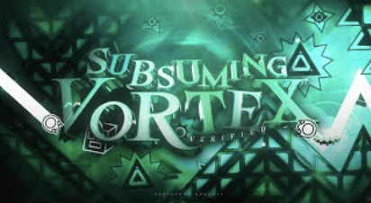

<div class="collection-item">
    
    <div class="collection-item-img-wrap">
        
        <p class="collection-item-caption">Fig 1. Visual reconstruction of the Vortex corridor.</p>
    </div>

    <div class="collection-item-text">
        <h3>Artifact: Subsuming Vortex</h3>
        
        <h4>Required Object Metadata</h4>
        <ul>
            <li><strong>Name:</strong> Subsuming Vortex</li>
            <li><strong>Material:</strong> Digital Construct (C++ / Object Data)</li>
            <li><strong>Size/Weight/Shape:</strong> 71,248 Objects / Linear Waveform Structure</li>
            <li><strong>Physical Properties:</strong> Plethora of gravity portals, strobing "Nine Circles" lighting effects, erratic pulse triggers.</li>
            <li><strong>Estimated Age:</strong> Late 2.1 Era (Circa 2019-2021)</li>
            <li><strong>Preservation State:</strong> Pristine (Digital Copy, ID 76263599)</li>
            <li><strong>Location Found:</strong> Excavated from the RobTop Servers (The "Demon List" Stratum)</li>
        </ul>

        <h4>Use and Function</h4>
        <ul>
            <li><strong>Likely Purpose:</strong> A "Top 1" ritual challenge meant to test the absolute limits of human reaction time.</li>
            <li><strong>Evidence of Use:</strong> Verification footage by user "Cursed"; high download count indicating frequent attempts.</li>
            <li><strong>Manufacture Clues:</strong> Distinctive "Nine Circles" architecture (pulsing saws, black background) refined to an extreme, almost hostile complexity.</li>
        </ul>

        <h4>Cultural Context</h4>
        <ul>
            <li><strong>Found With:</strong> Often cited alongside "Sonic Wave Infinity" and other "Impossible" list demons.</li>
            <li><strong>Burial/Habitat Context:</strong> Resides in the "Extreme Demon" classification of the server archives.</li>
            <li><strong>Symbolism:</strong> Represents the "Vortex" that consumes the player; a symbol of how difficult the level is in the post-Baryzou era.</li>
            <li><strong>Comparison:</strong> Morphologically similar to the artifact "Bausha Vortex" but significantly more complex and hostile.</li>
        </ul>
    </div>
</div>
